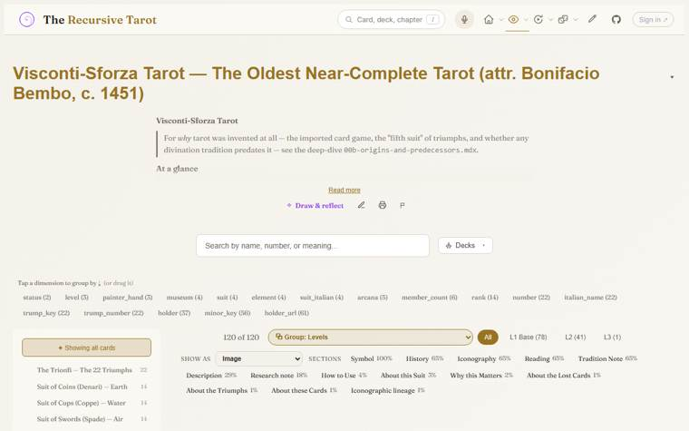

Cards
The deck as a grid of cards, with a detail pop-up for each card and its sources. It reads any grammar in this repo.
Open it here Now in Play: the Visconti-Sforza in Cards ↗
The files: archive/cards.html, viewers/reference-resolve.js, viewers/grammar-loader.js, viewers/dimension-engine.js, viewers/deck-picker.js. It used to live at viewers/cards.html, which now forwards here.